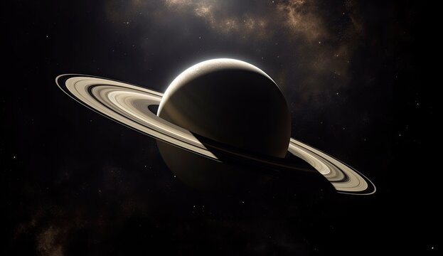

Saturn
INFORMAȚII DESPRE PLANETA SATURN
Planeta Saturn, a șasea planetă de la soare,
este faimoasă pentru inelele sale. Când
Galileo Galilei s-a uitat pentru prima oară la
Saturn la începutul anilor 1600, el a crezut
că este o entitate compusă din trei părți, cu
o planetă pe o parte și două luni enorme pe
cealaltă.
Christiaan Huygens a propus că erau inele
mai mult de 40 de ani mai târziu.
Oamenii de știință nu sunt siguri de evoluția
inelelor, deoarece sunt făcute din gheață și
rocă.
Există mai multe luni care orbitează
planeta gazoasă, care este în principal
compusă din hidrogen şi heliu.
CURIOZITĂȚI DESPRE PLANETA SATURN
- Saturn este imens. Este a doua cea mai mare planetă din sistemul nostru solar.
- Nu poți sta pe Saturn. Saturn nu e ca Pământul, este compus în mare parte din gaze.
- Saturn ar putea pluti în apă, deoarece este în mare parte din gaz.
- Pe Saturn este un vânt foarte puternic. Vânturile din jurul ecuatorului pot ajunge de 1.800 de kilometri pe oră.
- Saturn înconjoară Soarele foarte încet. Un an pe Saturn este mai mult de 29 de ani de pe Pământ.